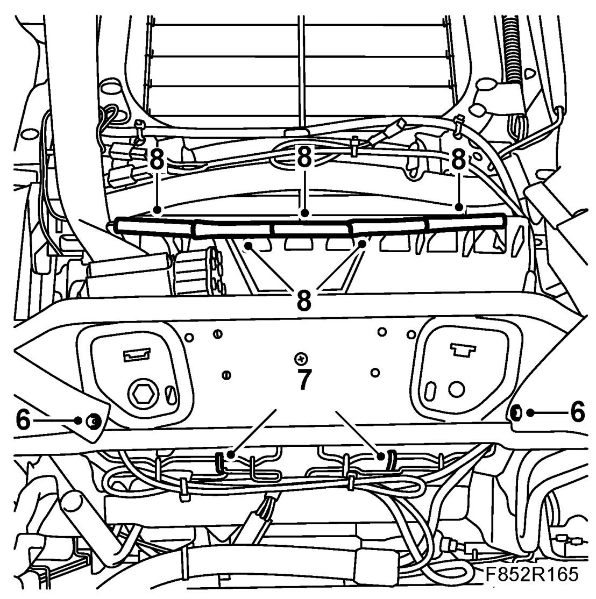
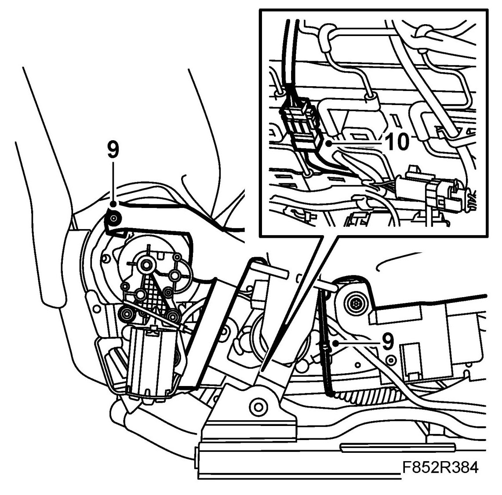
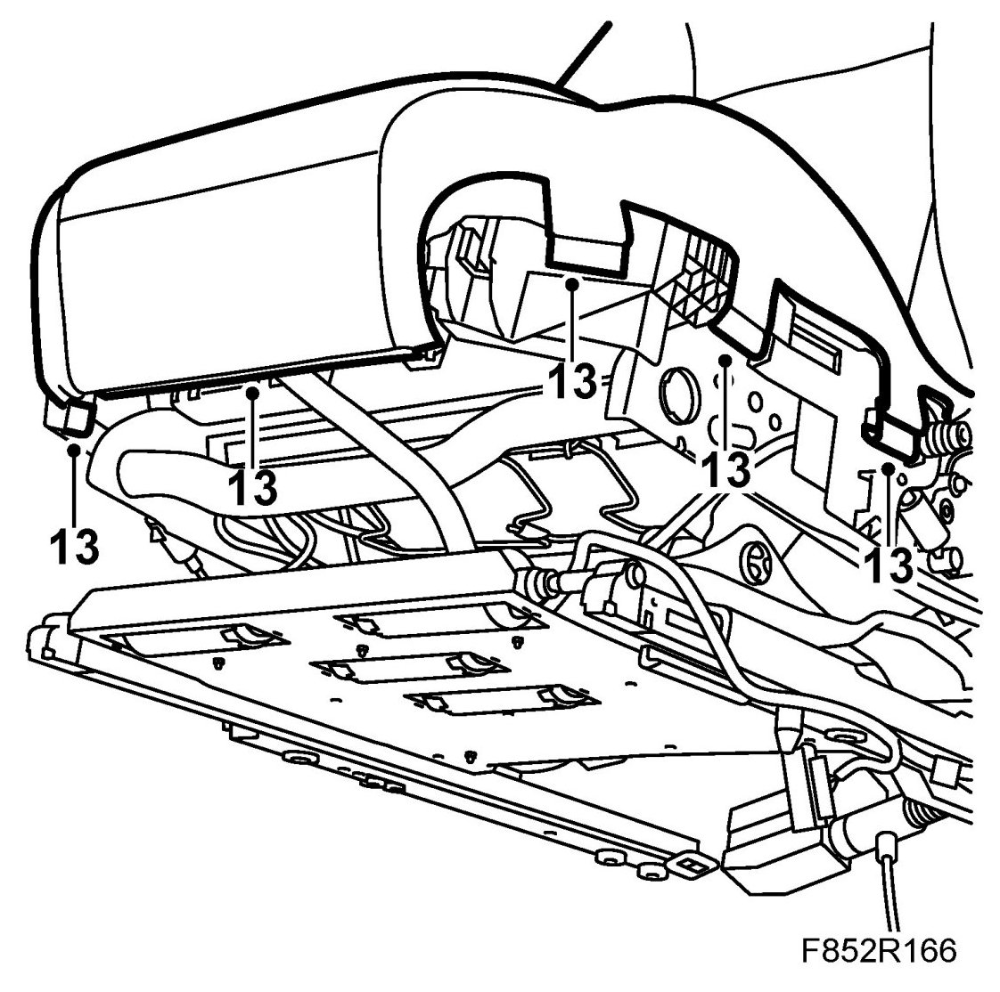
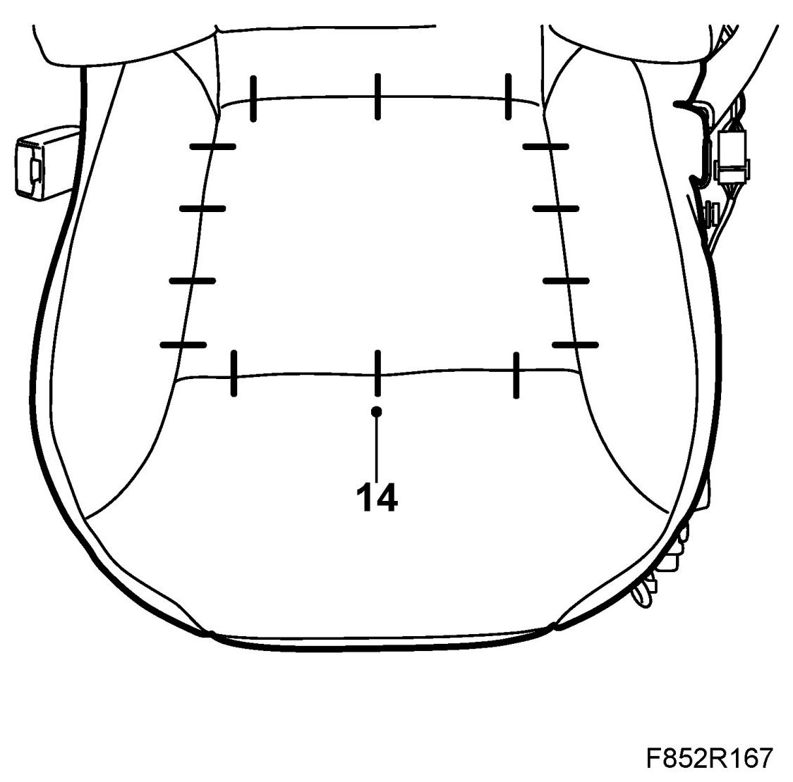
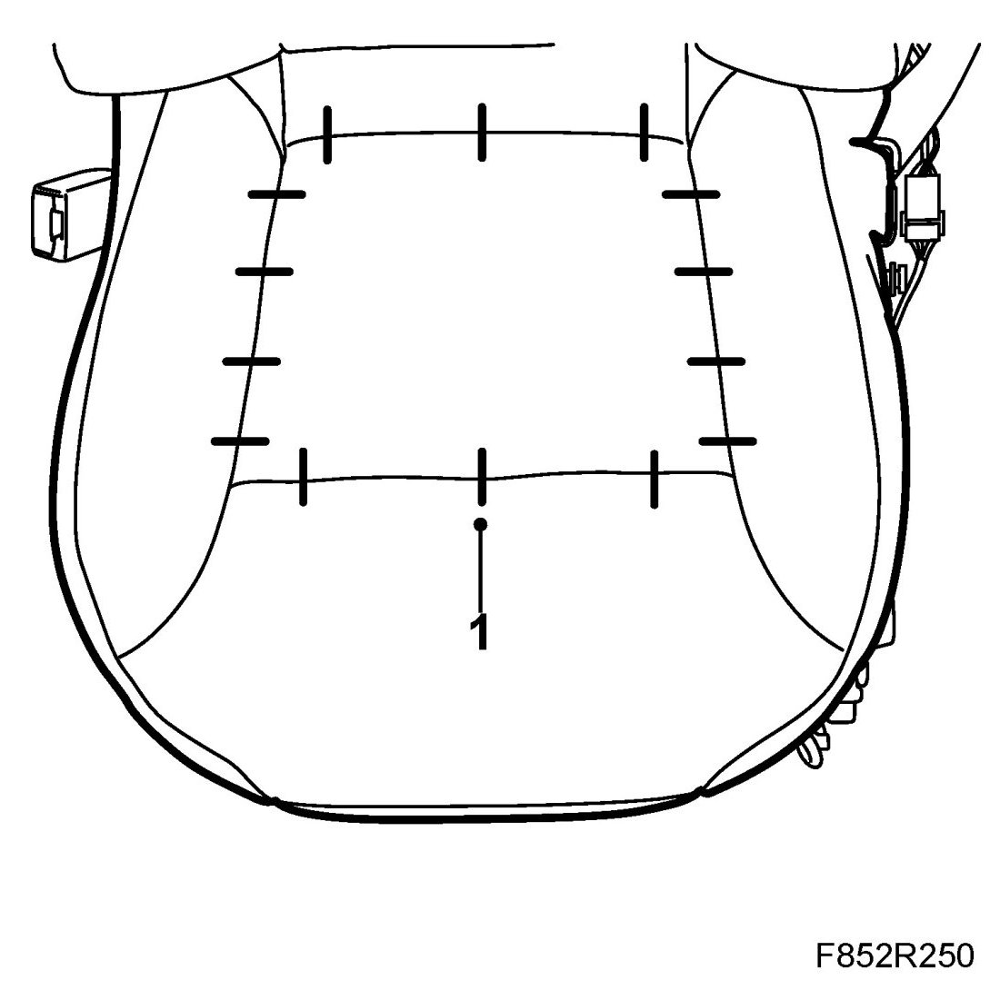
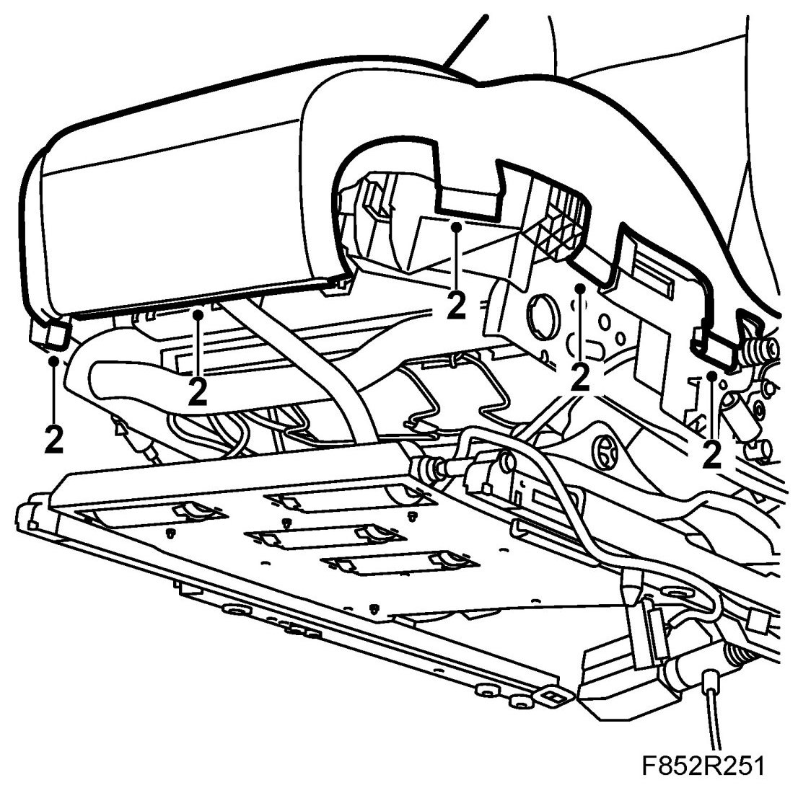
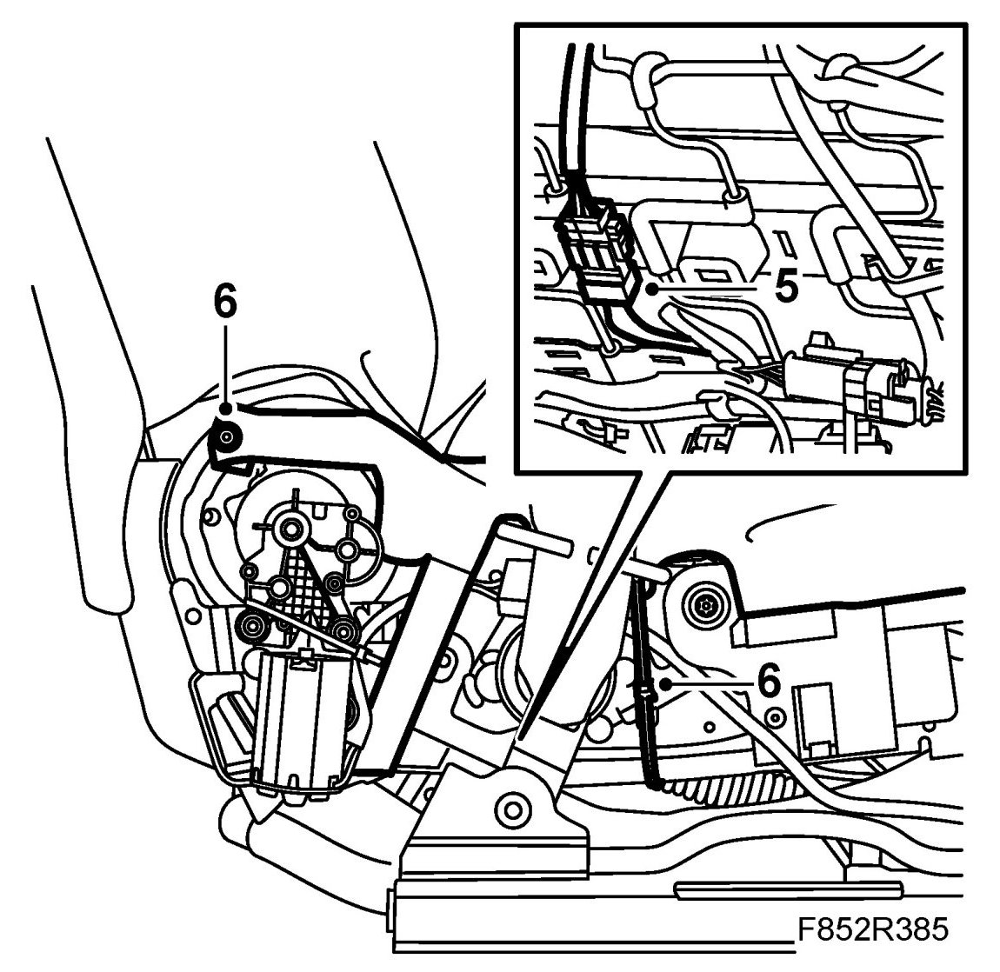
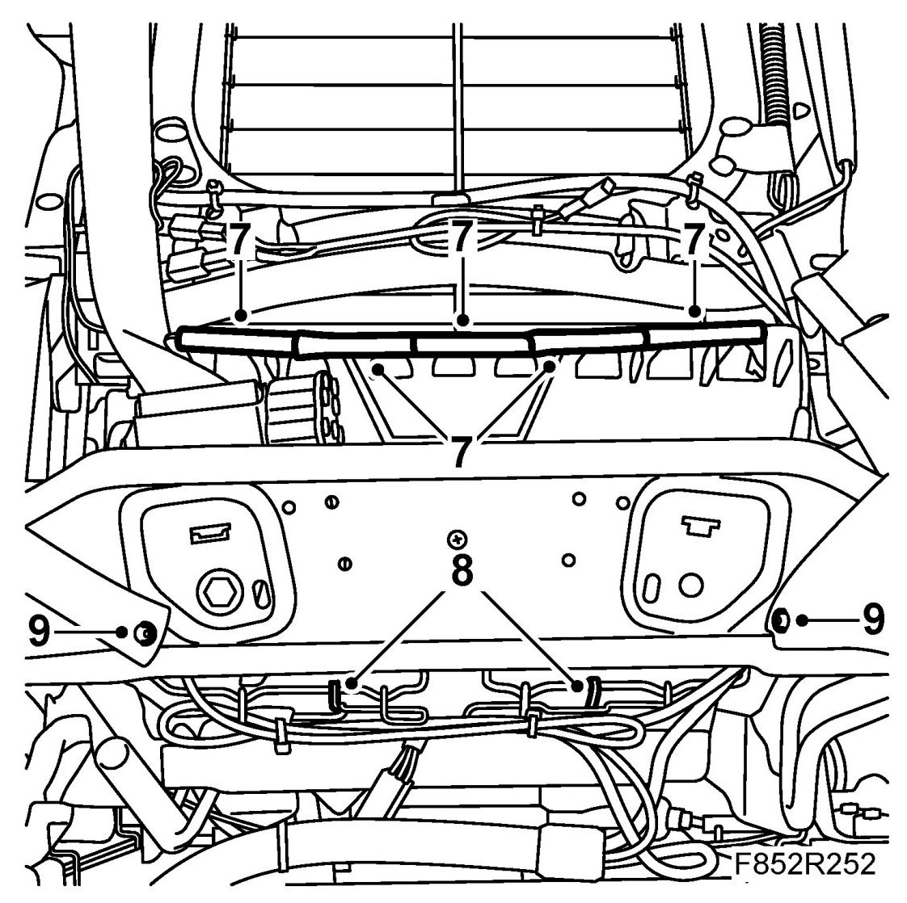

Seat Upholstery/Cushion Front Seat, CV
Seat Upholstery/cushion Front Seat, CV
To remove
1. Remove Front seat, CV.
2. Remove the seat cover.
3. Electrically adjustable seat: Remove the rear outer seat cover.
Manual seat: Remove the outer seat cover.
4. Remove the rear inner seat cover.
5. Remove the rear lower cover.
6. Remove the side tensioners for the seat trim, use 84 71 179 Removal tool, clips.

7. Remove the elastic strips from the seat springs.
8. Remove the strips for the backrest trim and seat trim.
9. Remove the screw and the cable tie securing the upholstery to the frame.

10. Unplug the seat heating connector.
11. Remove the elastic strips from the backrest springs.
12. Fold up the backrest.
13. Remove the fixing strips from the front edge and sides of the seat trim. Remove the upholstery and cushion.

14. Remove the fixing clips for the seat upholstery. Remove the upholstery.

To fit
1. Refit the fixing clips for the seat upholstery. 84 71 062 Fitting kit, upholstery clips.

2. Fit the seat fixing strips to the front edge and sides.

3. Fold down the backrest.
4. Fit the elastic strips to the backrest springs.
5. Plug in the seat heating connector.

6. Fit the screw and the cable tie securing the upholstery to the frame.
7. Fit the backrest trim and seat trim strips.

8. Fit the elastic strips to the seat springs.
9. Fit the side tensioners for the seat upholstery.
10. Fit the lower rear cover.
11. Fit the rear inner side cover.
12. Electrically adjustable seat: Fit the rear outer seat cover.
Manual seat: Fit the outer seat cover.
13. Fit the backrest cover.
14. Fit the front seat.